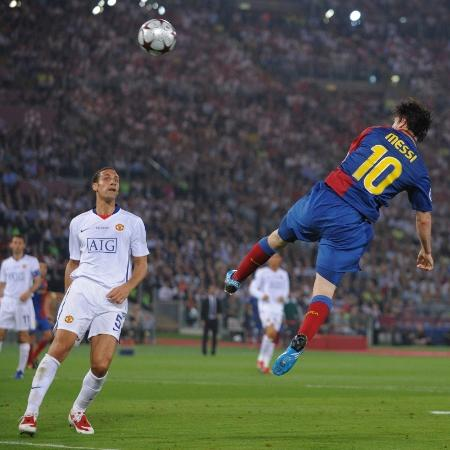
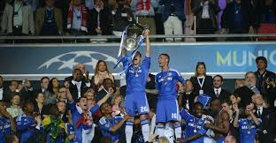

Liverpool x Milan (2005)
Essa final ficou conhecida como "O Milagre de Istambul" porque o Liverpool F.C. perdia por 3x0 para o AC Milan no primeiro tempo e parecia completamente derrotado. No segundo tempo, o Liverpool marcou três gols em apenas seis minutos e empatou a partida em 3x3. Depois, venceu nos pênaltis com atuação histórica do goleiro Jerzy Dudek.

Barcelona x Manchester United (2009)
A primeira e única final de Champions League que Cristiano Ronaldo e Lionel Messi se enfrentaram, ainda jovens, terminando com o Barcelona sendo campeão. Messi e Eto Marcaram e consolidaram a vitória, e debates sobre Messi ou Cristiano já começaram a se popularizar, começando assim uma Era única de rivalidade dentro da história dos esportes.

FC Bayern Munich x Chelsea F.C (2012)
Por coincidência A final de 2012 foi sediada na casa do Bayern, em Munique. O Bayern dominou a partida e abriu o placar no fim, mas Didier Drogba empatou aos 88 minutos. Nos pênaltis, o Chelsea venceu graças às defesas de Petr Čech e ao pênalti decisivo de Drogba. Consagrando assim a primeira Champions League da história do Chelsea.